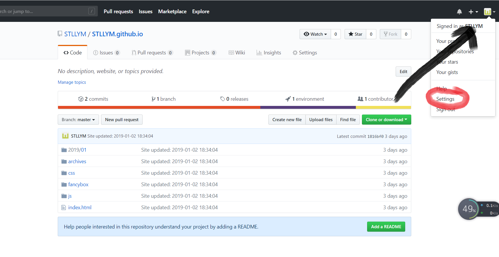

<!DOCTYPE html>
<html>
<head><meta name="generator" content="Hexo 3.8.0">
  <meta charset="utf-8">
  

  
  <title>Hexo</title>
  <meta name="viewport" content="width=device-width, initial-scale=1, maximum-scale=1">
  <meta property="og:type" content="website">
<meta property="og:title" content="Hexo">
<meta property="og:url" content="http://yoursite.com/index.html">
<meta property="og:site_name" content="Hexo">
<meta property="og:locale" content="default">
<meta name="twitter:card" content="summary">
<meta name="twitter:title" content="Hexo">
  
    <link rel="alternate" href="/atom.xml" title="Hexo" type="application/atom+xml">
  
  
    <link rel="icon" href="/favicon.png">
  
  
    <link href="//fonts.googleapis.com/css?family=Source+Code+Pro" rel="stylesheet" type="text/css">
  
  <link rel="stylesheet" href="/css/style.css">
</head>
</html>
<body>
  <div id="container">
    <div id="wrap">
      <header id="header">
  <div id="banner"></div>
  <div id="header-outer" class="outer">
    <div id="header-title" class="inner">
      <h1 id="logo-wrap">
        <a href="/" id="logo">Hexo</a>
      </h1>
      
    </div>
    <div id="header-inner" class="inner">
      <nav id="main-nav">
        <a id="main-nav-toggle" class="nav-icon"></a>
        
          <a class="main-nav-link" href="/">Home</a>
        
          <a class="main-nav-link" href="/archives">Archives</a>
        
      </nav>
      <nav id="sub-nav">
        
          <a id="nav-rss-link" class="nav-icon" href="/atom.xml" title="RSS Feed"></a>
        
        <a id="nav-search-btn" class="nav-icon" title="Search"></a>
      </nav>
      <div id="search-form-wrap">
        <form action="//google.com/search" method="get" accept-charset="UTF-8" class="search-form"><input type="search" name="q" class="search-form-input" placeholder="Search"><button type="submit" class="search-form-submit">&#xF002;</button><input type="hidden" name="sitesearch" value="http://yoursite.com"></form>
      </div>
    </div>
  </div>
</header>
      <div class="outer">
        <section id="main">
  
    <article id="post-一些问题" class="article article-type-post" itemscope="" itemprop="blogPost">
  <div class="article-meta">
    <a href="/2019/01/05/一些问题/" class="article-date">
  <time datetime="2019-01-05T12:56:52.000Z" itemprop="datePublished">2019-01-05</time>
</a>
    
  </div>
  <div class="article-inner">
    
    
      <header class="article-header">
        
  
    <h1 itemprop="name">
      <a class="article-title" href="/2019/01/05/一些问题/">一些问题</a>
    </h1>
  

      </header>
    
    <div class="article-entry" itemprop="articleBody">
      
        <p>title: 制作中  遇到的一些问题<br>date: 2019-01-03 21:14:09</p>
<h2 id="tags"><a href="#tags" class="headerlink" title="tags:"></a>tags:</h2><p>#在制作中所<strong>遇见</strong>的一些问题  </p>
<hr>
<p>##1 安装两个必须环境</p>
<ol>
<li>安装Git<br><a href="http://xiazai.sogou.com/detail/34/16/-3684166773641448611.html?e=1970" target="_blank" rel="noopener">下载地址</a><br>安装之后用cmd进入开始设定好的文件夹<br>如我这里使用的是D盘自己使新创立的文件夹<br>当显示如下即为<strong>成功</strong><br>  </li>
<li>安装Node.js<br><a href="https://nodejs.org/en/" target="_blank" rel="noopener">下载地址</a><br>安装之后同样用cmd及同1.操作<br>显示如下即为<strong>成功</strong><br><br>前两步没有过复杂的操作，只需下载安装后进行检查是否安装成功即可<br>##2 Github 创建注册及新建<br>其网站为<a href="https://github.com/" target="_blank" rel="noopener">Github创建起始</a><br>界面如下：<br><br>再点击 start a project 之后进入下一步注意格式为用户名加”用户名.github.io” 防止出错。然后再添加最下边的变量之时为下图<br>之后按照提示要求注册配置完成，项目已被配置到网上可被访问<br>##3 hexo的安装以及配置  </li>
</ol>
<ul>
<li>在文件夹中安装hexo，第一次安装时没有打开所在空目录，所以一直报错，最后在学长帮助下注意到问题所在，安装并成功，在命令行中输入hexo -v来检查是否安装成功。如果成功如下图所示：<br>  </li>
<li>配置时需要先输入hexo init，<strong>初始化*</strong>文件夹*<br>之后输出 Start blogging with Hexo！输入 npm install 安装所需组件之后输入hexo g即可体验Hexo，输入hexo s，开启服务器。而此时需复制并将网址粘贴到网络浏览器去访问，不要傻等跳转，因为我就傻等半个多小时，然后才发现是要自己访问页面<br><a href="http://localhost:5000" target="_blank" rel="noopener">Hexo网站页面</a><br>##4 Hexo 与 GitHub page联系建立  </li>
<li>在文件夹中右键唤起 Git 的 Git Bash Here  然后用两次命令绑定用户名和e-mail 输入cd ~/.ssh确认存在然后输入ls出现如下即为正确<strong>存在</strong>：<br>  </li>
<li>输入ssh-keygen -t rsa -C “   用户   qq.com”（其实就是之前绑定的邮箱）然后三个回车获得生成的密钥，输入eval “$(ssh-agent -s)”，得到如下界面,需要注意的是<strong>在你输入密码时不会显示</strong>，你只需输入完然后回车即可<br><br>添加密钥到ssh-agent，在输入(ssh-add~s/.ssh/ idrsa)，添加生成的SSH Key到ssh-agent此时登陆<a href="https://github.com/STLLYM/STLLYM.github.io" target="_blank" rel="noopener">这个页面</a>到达如下界面<br><br>然后按照步骤新建一个new ssh key，将id_ras.pub文件里内容复制上去(ps：可以使用电脑自带记事本打开)。获得如下：<br>  </li>
<li>验证是否搞定输入ssh -T <a href="mailto:git@github.com" target="_blank" rel="noopener">git@github.com</a>,如果<strong>成功</strong>显示Hi！用户名，ok。<br>##5 配置Deployment<br>此步按照步骤未出错，repo值修改成功，注意大小写以及获得github中ssh即可位置如下<br><br>##6 新建及部署<br>使用hexo d -g，生成部署显示后即可从个人网站查看<br><a href="http://STLLYM.github.io" target="_blank" rel="noopener">我自己的网站</a></li>
</ul>

      
    </div>
    <footer class="article-footer">
      <a data-url="http://yoursite.com/2019/01/05/一些问题/" data-id="cjqjh4lwe00029gvi6oqqcaut" class="article-share-link">Share</a>
      
      
    </footer>
  </div>
  
</article>


  
    <article id="post-post-1" class="article article-type-post" itemscope="" itemprop="blogPost">
  <div class="article-meta">
    <a href="/2019/01/05/post-1/" class="article-date">
  <time datetime="2019-01-05T08:27:54.000Z" itemprop="datePublished">2019-01-05</time>
</a>
    
  </div>
  <div class="article-inner">
    
    
      <header class="article-header">
        
  
    <h1 itemprop="name">
      <a class="article-title" href="/2019/01/05/post-1/">post</a>
    </h1>
  

      </header>
    
    <div class="article-entry" itemprop="articleBody">
      
        
      
    </div>
    <footer class="article-footer">
      <a data-url="http://yoursite.com/2019/01/05/post-1/" data-id="cjqjh4lwd00019gvi0w0qnzmb" class="article-share-link">Share</a>
      
      
    </footer>
  </div>
  
</article>


  
    <article id="post-制作中-遇到的一些问题" class="article article-type-post" itemscope="" itemprop="blogPost">
  <div class="article-meta">
    <a href="/2019/01/03/制作中-遇到的一些问题/" class="article-date">
  <time datetime="2019-01-03T13:14:09.000Z" itemprop="datePublished">2019-01-03</time>
</a>
    
  </div>
  <div class="article-inner">
    
    
      <header class="article-header">
        
  
    <h1 itemprop="name">
      <a class="article-title" href="/2019/01/03/制作中-遇到的一些问题/">制作中  遇到的一些问题</a>
    </h1>
  

      </header>
    
    <div class="article-entry" itemprop="articleBody">
      
        <p>#在制作中所<strong>遇见</strong>的一些问题  </p>
<hr>
<p>#1 安装两个必须环境</p>
<ol>
<li>安装Git<br><a href="http://xiazai.sogou.com/detail/34/16/-3684166773641448611.html?e=1970" target="_blank" rel="noopener">下载地址</a><br>安装之后用cmd进入开始设定好的文件夹<br>如我这里使用的是D盘自己使新创立的文件夹<br>当显示如下即为<strong>成功</strong><br>  </li>
<li>安装Node.js<br><a href="https://nodejs.org/en/" target="_blank" rel="noopener">下载地址</a><br>安装之后同样用cmd及同1.操作<br>显示如下即为<strong>成功</strong><br><br>前两步没有过复杂的操作，只需下载安装后进行检查是否安装成功即可<br>#2 Github 创建注册及新建<br>其网站为<a href="https://github.com/" target="_blank" rel="noopener">Github创建起始</a><br>界面如下：<br><br>再点击 start a project 之后进入下一步注意格式为用户名加”用户名.github.io” 防止出错。然后再添加最下边的变量之时为下图<br>之后按照提示要求注册配置完成，项目已被配置到网上可被访问<br>#3 hexo的安装以及配置  </li>
</ol>
<ul>
<li>在文件夹中安装hexo，第一次安装时没有打开所在空目录，所以一直报错，最后在学长帮助下注意到问题所在，安装并成功，在命令行中输入hexo -v来检查是否安装成功。如果成功如下图所示：<br>  </li>
<li>配置时需要先输入hexo init，<strong>初始化*</strong>文件夹*<br>之后输出 Start blogging with Hexo！输入 npm install 安装所需组件之后输入hexo g即可体验Hexo，输入hexo s，开启服务器。而此时需复制并将网址粘贴到网络浏览器去访问，不要傻等跳转，因为我就傻等半个多小时，然后才发现是要自己访问页面<br><a href="http://localhost:5000" target="_blank" rel="noopener">Hexo网站页面</a><br>#4 Hexo 与 GitHub page联系建立  </li>
<li>在文件夹中右键唤起 Git 的 Git Bash Here  然后用两次命令绑定用户名和e-mail 输入cd ~/.ssh确认存在然后输入ls出现如下即为正确<strong>存在</strong>：<br>  </li>
<li>输入ssh-keygen -t rsa -C “   用户   qq.com”（其实就是之前绑定的邮箱）然后三个回车获得生成的密钥，输入eval “$(ssh-agent -s)”，得到如下界面,需要注意的是<strong>在你输入密码时不会显示</strong>，你只需输入完然后回车即可<br><br>添加密钥到ssh-agent，在输入(ssh-add~s/.ssh/ idrsa)，添加生成的SSH Key到ssh-agent此时登陆<a href="https://github.com/STLLYM/STLLYM.github.io" target="_blank" rel="noopener">这个页面</a>到达如下界面<br><br>然后按照步骤新建一个new ssh key，将id_ras.pub文件里内容复制上去(ps：可以使用电脑自带记事本打开)。获得如下：<br>  </li>
<li>验证是否搞定输入ssh -T <a href="mailto:git@github.com" target="_blank" rel="noopener">git@github.com</a>,如果<strong>成功</strong>显示Hi！用户名，ok。<br>#5 配置Deployment<br>此步按照步骤未出错，repo值修改成功，注意大小写以及获得github中ssh即可位置如下<br><br>#6 新建及部署<br>使用hexo d -g，生成部署显示后即可从个人网站查看<br><a href="http://STLLYM.github.io" target="_blank" rel="noopener">我自己的网站</a></li>
</ul>

      
    </div>
    <footer class="article-footer">
      <a data-url="http://yoursite.com/2019/01/03/制作中-遇到的一些问题/" data-id="cjqjh4lwr00049gviphu4f8x4" class="article-share-link">Share</a>
      
      
    </footer>
  </div>
  
</article>


  
    <article id="post-post" class="article article-type-post" itemscope="" itemprop="blogPost">
  <div class="article-meta">
    <a href="/2019/01/03/post/" class="article-date">
  <time datetime="2019-01-03T13:10:32.000Z" itemprop="datePublished">2019-01-03</time>
</a>
    
  </div>
  <div class="article-inner">
    
    
      <header class="article-header">
        
  
    <h1 itemprop="name">
      <a class="article-title" href="/2019/01/03/post/">post</a>
    </h1>
  

      </header>
    
    <div class="article-entry" itemprop="articleBody">
      
        
      
    </div>
    <footer class="article-footer">
      <a data-url="http://yoursite.com/2019/01/03/post/" data-id="cjqjh4lwg00039gvi5ejf3gtb" class="article-share-link">Share</a>
      
      
    </footer>
  </div>
  
</article>


  
    <article id="post-hello-world" class="article article-type-post" itemscope="" itemprop="blogPost">
  <div class="article-meta">
    <a href="/2019/01/01/hello-world/" class="article-date">
  <time datetime="2019-01-01T14:43:31.858Z" itemprop="datePublished">2019-01-01</time>
</a>
    
  </div>
  <div class="article-inner">
    
    
      <header class="article-header">
        
  
    <h1 itemprop="name">
      <a class="article-title" href="/2019/01/01/hello-world/">Hello World</a>
    </h1>
  

      </header>
    
    <div class="article-entry" itemprop="articleBody">
      
        <p>Welcome to <a href="https://hexo.io/" target="_blank" rel="noopener">Hexo</a>! This is your very first post. Check <a href="https://hexo.io/docs/" target="_blank" rel="noopener">documentation</a> for more info. If you get any problems when using Hexo, you can find the answer in <a href="https://hexo.io/docs/troubleshooting.html" target="_blank" rel="noopener">troubleshooting</a> or you can ask me on <a href="https://github.com/hexojs/hexo/issues" target="_blank" rel="noopener">GitHub</a>.</p>
<h2 id="Quick-Start"><a href="#Quick-Start" class="headerlink" title="Quick Start"></a>Quick Start</h2><h3 id="Create-a-new-post"><a href="#Create-a-new-post" class="headerlink" title="Create a new post"></a>Create a new post</h3><figure class="highlight bash"><table><tr><td class="gutter"><pre><span class="line">1</span><br></pre></td><td class="code"><pre><span class="line">$ hexo new <span class="string">"My New Post"</span></span><br></pre></td></tr></table></figure>
<p>More info: <a href="https://hexo.io/docs/writing.html" target="_blank" rel="noopener">Writing</a></p>
<h3 id="Run-server"><a href="#Run-server" class="headerlink" title="Run server"></a>Run server</h3><figure class="highlight bash"><table><tr><td class="gutter"><pre><span class="line">1</span><br></pre></td><td class="code"><pre><span class="line">$ hexo server</span><br></pre></td></tr></table></figure>
<p>More info: <a href="https://hexo.io/docs/server.html" target="_blank" rel="noopener">Server</a></p>
<h3 id="Generate-static-files"><a href="#Generate-static-files" class="headerlink" title="Generate static files"></a>Generate static files</h3><figure class="highlight bash"><table><tr><td class="gutter"><pre><span class="line">1</span><br></pre></td><td class="code"><pre><span class="line">$ hexo generate</span><br></pre></td></tr></table></figure>
<p>More info: <a href="https://hexo.io/docs/generating.html" target="_blank" rel="noopener">Generating</a></p>
<h3 id="Deploy-to-remote-sites"><a href="#Deploy-to-remote-sites" class="headerlink" title="Deploy to remote sites"></a>Deploy to remote sites</h3><figure class="highlight bash"><table><tr><td class="gutter"><pre><span class="line">1</span><br></pre></td><td class="code"><pre><span class="line">$ hexo deploy</span><br></pre></td></tr></table></figure>
<p>More info: <a href="https://hexo.io/docs/deployment.html" target="_blank" rel="noopener">Deployment</a></p>

      
    </div>
    <footer class="article-footer">
      <a data-url="http://yoursite.com/2019/01/01/hello-world/" data-id="cjqjh4lw900009gvibsyhwbwv" class="article-share-link">Share</a>
      
      
    </footer>
  </div>
  
</article>


  


</section>
        
          <aside id="sidebar">
  
    

  
    

  
    
  
    
  <div class="widget-wrap">
    <h3 class="widget-title">Archives</h3>
    <div class="widget">
      <ul class="archive-list"><li class="archive-list-item"><a class="archive-list-link" href="/archives/2019/01/">January 2019</a></li></ul>
    </div>
  </div>


  
    
  <div class="widget-wrap">
    <h3 class="widget-title">Recent Posts</h3>
    <div class="widget">
      <ul>
        
          <li>
            <a href="/2019/01/05/一些问题/">一些问题</a>
          </li>
        
          <li>
            <a href="/2019/01/05/post-1/">post</a>
          </li>
        
          <li>
            <a href="/2019/01/03/制作中-遇到的一些问题/">制作中  遇到的一些问题</a>
          </li>
        
          <li>
            <a href="/2019/01/03/post/">post</a>
          </li>
        
          <li>
            <a href="/2019/01/01/hello-world/">Hello World</a>
          </li>
        
      </ul>
    </div>
  </div>

  
</aside>
        
      </div>
      <footer id="footer">
  
  <div class="outer">
    <div id="footer-info" class="inner">
      &copy; 2019 John Doe<br>
      Powered by <a href="http://hexo.io/" target="_blank">Hexo</a>
    </div>
  </div>
</footer>
    </div>
    <nav id="mobile-nav">
  
    <a href="/" class="mobile-nav-link">Home</a>
  
    <a href="/archives" class="mobile-nav-link">Archives</a>
  
</nav>
    

<script src="//ajax.googleapis.com/ajax/libs/jquery/2.0.3/jquery.min.js"></script>


  <link rel="stylesheet" href="/fancybox/jquery.fancybox.css">
  <script src="/fancybox/jquery.fancybox.pack.js"></script>


<script src="/js/script.js"></script>


  </div>
</body>
</html>